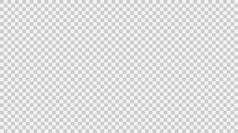

Portfólio de Matemática
Mateus Mazon Parcianello

|
|
Portfólio de Matemática |
Mateus Mazon Parcianello |
|
|---|
Bom, eu percebi que eu dei uma melhorada em relação ao primeiro trimestre, tentei usar as coisas
que falei no portfólio do último trimestre e parece que melhorou um pouco mesmo, tentei prestar
mais atenção e estudar mais em aula. Teve alguns temas que eu acabei me esquecendo de fazer eles,
mas pelo menos depois eu os fiz. A participação na aula se manteve igual junto com os outros
meios de estudo. Quanto ao resto continua a mesma coisa. Acho que se eu me manter como estou
e quem sabe melhorar um pouco mais pode dar bom, mas não depende só de mim, muitas vezes depende
das coisas ao meu redor, mas eu estou tentando.
Próximo trimestre poderia dar uma alterada, fazer um portfólio em dupla em que um analisa outro,
mas se não der assim tá bom. Tirando as coisas citadas acima não percebi muitas coisas diferentes,
o segundo trimestre foi bem mais diferente que o primeiro em quase tudo, não apenas matemática.
Por fora eu estou assim:
Mas por dentro me sinto assim:
E minha namorada está assim:
